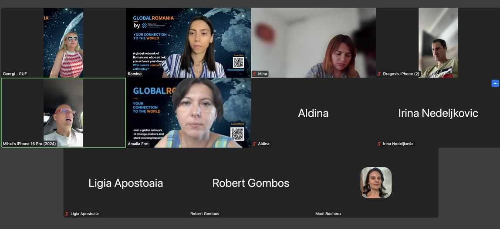
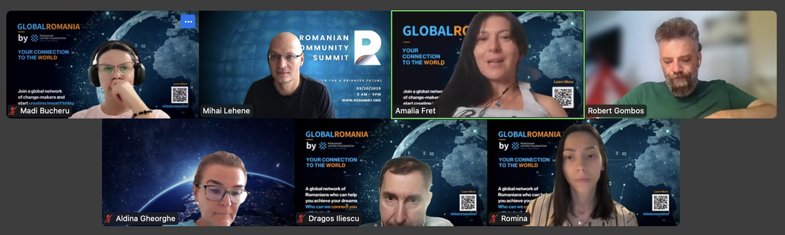
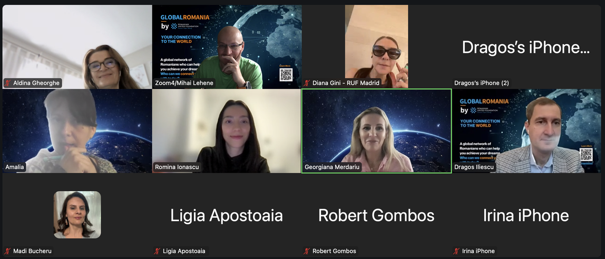

Purpose
Timeline
Purpose
Timeline
Volunteer invite - Iulian si Darina special discussion Excellence Center,
next Nicole -
Participants:
Roles:
Moderatori: Georgi - Rob
Scrib - ???
TimeKeeper: ???
Observator: Dragos
Decision Maker: Mihai
Agenda:
10:00 AM CDT
Amalia 10 min
11:00 AM CDT
Summary & Recording available here: https://drive.google.com/drive/folders/14yu7AravbL6LT_GKh54ZFrh8O4RX8b5d
Participants:
Agenda:
Participants: Diana, Dragos, Miha L, Amalia, Romina, Madi, Gabi Tatar, Aldina, Luciana, Beatrice, Ligia, Irina, Ioana
Agenda:
Participants: Ioana, Romina, Amalia, Madi, Gabriela, Ligia, Irina, Miha, Dragos, Georgi, Mihai
Agenda:
Aldina and Robert G at Gala Regina Maria in Bucharest
Participants: Aldina, Robert, Amalia, Madi, Miha, Romina, Ioana Mic, Dragos, Luciana I, Irina N, Gabi C, Karina G, Ligia, Ioana, Chi, Georgi si Mihai
Agenda:
Agenda pentru intalnirea cu trainer Florin Ghinda
Ce? De ce?
1. Stabilirea unor obiective strategice/indicatori
măsurabili/rezultate așteptate pentru RUF pentru 2025-2030.
2. Lansarea direcției strategice/aplicației RUF (în format pilot?) cristalizate la retreatul din iulie 2025 (+ o mulțime de acțiuni aferente acestei lansări, bugete, acțiuni de comunicare și sales, echipă, tehnologie, explorarea nevoilor etc).
3. Implementarea unui sistem (recurent, anual poate) de colectare de feedback de la mai mulți stakeholderi (echipă, voluntari, donatori cheie, ONG-uri partenere, companii partenere etc).
Cum? Cu cine? Pentru cine?
4. Clarificarea organigramei și stabilirea/negocierea unor roluri în echipă și metrici/așteptări clar definite.
5. Comunicarea în echipă – prin implementarea unui sistem constant de întâlniri 1:1 pentru comunicare, feedback, ascultare în echipă +
sistem recurent și constant de comunicare în echipa nucleu, dar și în echipa extinsă RUF (town hall, de exemplu).
6. Revederea și dezvoltarea sistemului de induction pentru membrii echipei RUF + voluntari (inclusiv includerea sistemului de valori).
7. Revederea și dezvoltarea website ului + a altor canale oficiale de comunicare RUF.
+ susținerea unor întâlniri online de follow-up (toamnă 2025) cu focus pe principalele elemente cheie/decizii/acțiuni stabilite la retreatul din iulie 2025.
Participants:
Agenda:
Participants: Diana, Irina N, Irina C, Romina, Ioana, Amalia, Miha, Ligia, Gabi, Georgi, Dragos, Mihai
Agenda:
Recapitulare rapidă
Echipa a întâmpinat-o pe noua voluntară Corina Dragan și a discutat despre proiectele aflate în derulare, inclusiv prezentări de evenimente și activități de comunicare. Ei au revizuit procesele de suport administrativ și eforturile de recrutare a echipei, cu actualizări privind diverse inițiative și proiecte, inclusiv programul Centrului de Excelență. Echipa a explorat provocările legate de branding și identitate vizuală, concentrându-se pe designul logo-ului și schemele de culori, discutând în același timp necesitatea unei consultări profesionale cu un expert în branding.
Următorii pași
Madi o va conecta pe Corina cu Sorin Bradin pentru munca de branding global
Amalia va continua să trimită mesaje potenţialilor contacte din comunitatea Centrului de Excelenţă
Mihai îl va include pe Iulian în discuția Centrului de Excelență
Irina se va coordona cu persoana care lucrează la proiectul Regina Maria privind Via Transilvania
Andreea și Beatrice vor colabora cu Sorin Bradin la dezvoltarea identității vizuale Global Romania
Madi va împărtăși logo-ul Centrului de Excelență cu echipa pentru comunicarea partenerilor
Rezumat
Introducere și actualizări ale noilor voluntari
Echipa a salutat-o pe Corina Dragan, o nouă voluntară care s-a alăturat echipei de comunicare în august și a prezentat-o echipei. Madi a furnizat actualizări despre proiectele în curs, inclusiv lucrările la prezentările evenimentelor și e-mailurile. Corina a împărtășit informații despre experiența ei în marketing și comunicare, iar echipa s-a angajat într-un scurt exercițiu pentru a afla mai multe despre rolurile și experiențele fiecăruia. Discuția s-a încheiat cu o reamintire despre întâlnirea de miercuri, la ora 10:00.
Actualizări ale echipei și suport administrativ
Întâlnirea s-a concentrat pe primirea noilor membri ai echipei și discutarea suportului administrativ. Mihai a subliniat disponibilitatea echipei administrative, inclusiv Irina și Romina, pentru a asista cu sarcini precum plățile și intrările în baze de date. Corinei i s-a mulțumit pentru contribuțiile sale, iar echipa a discutat despre supravegherea financiară, Ligia evidențiind experiența sa în managementul financiar. Diana s-a întors în echipă și a împărtășit noutăți despre activitățile sale. Conversația s-a încheiat cu Amalia menționând reactivarea echipelor studențești din Iași și Cluj, inclusiv noi membri precum Cristi Pușcaș și Cosmin Toma.
Dezvoltarea echipei și sustenabilitatea proiectului
Echipa a discutat despre progresele înregistrate în atingerea obiectivului de formare a unei echipe de zece persoane, Amalia și ceilalți făcând pași buni în recrutare și definirea rolurilor. Mihai a subliniat necesitatea activării comunităților și importanța sustenabilității proiectelor, discutând totodată despre potențialii noi voluntari și necesitatea coordonării eforturilor pentru inițiativele viitoare. Echipa a menționat, de asemenea, Centrul de Excelență ca un program cheie, cu planuri de a discuta mai departe acest lucru într-o întâlnire viitoare.
Recrutarea profesorilor și sustenabilitatea programelor
Echipa Centrului de Excelență a discutat despre provocările legate de recrutarea profesorilor și sustenabilitatea programelor, menționând o reducere semnificativă a numărului de profesori voluntari. Aceștia au primit un grant DRP pentru a se extinde la cinci noi comunități, dar se luptă să respecte termenul limită al proiectului din cauza resurselor limitate și a provocărilor de coordonare. Echipa a identificat nevoia unui coordonator dedicat și a unui director de comunicare pentru a gestiona proiectul în mod eficient și a discutat planurile de a contacta membrii comunității pentru sprijin. Aceștia au recunoscut, de asemenea, importanța menținerii programului existent pentru 140 de copii, în timp ce lucrează la revitalizarea proiectului pe termen lung.
Actualizări de proiect și planuri de colaborare
Echipa a discutat mai multe proiecte și inițiative. Romina și Madi au abordat necesitatea de a împărtăși un logo cu partenerii și de a asigura o comunicare adecvată. Aldina și Romina au vorbit despre procedurile Ase și Ubb, subliniind importanța creării de adrese de e-mail dedicate pentru noii solicitanți. Robert și Georgiana au discutat despre o colaborare cu Regina Maria, concentrându-se pe o expoziție și prelegeri pentru a sărbători centenarul Reginei Maria. Irina și-a exprimat interesul pentru proiectul Via Transilvanica și a solicitat mai multe informații despre planuri. Echipa a fost de acord să urmărească aceste proiecte și inițiative în săptămânile următoare.
Procesul de invitație pentru calendarul voluntarilor
Echipa a discutat despre invitațiile calendaristice pentru voluntari, Georgiana subliniind că acestea ar trebui trimise direct în calendarele voluntarilor, mai degrabă decât să se bazeze pe notificări prin e-mail. Robert Gombos a confirmat că 196 de voluntari au primit invitații, în timp ce Amalia a adăugat manual 94 de persoane în calendarul ei. Echipa a fost de acord ca toți voluntarii activi să primească invitații în calendar, cu înțelegerea că indivizii trebuie să adauge manual evenimentele în calendarele lor după ce acceptă invitația.
Provocări în domeniul voluntariatului și al comunicării
Echipa a discutat despre provocările legate de implicarea voluntarilor și procesele de comunicare, în special cu privire la tranziția către o nouă platformă. Georgiana a subliniat necesitatea activării obligatorii a voluntarilor și importanța unui eveniment comunitar viitor, sugerând trecerea la un format virtual pentru a asigura o mai bună participare. Madi a evidențiat nevoia de voluntari experimentați și adaptabili, în timp ce Robert Gombos și-a exprimat îngrijorarea cu privire la procesul de voluntariat și necesitatea unor roluri specifice. Echipa a discutat, de asemenea, despre importanța unei identități vizuale clare pentru proiectul lor global și necesitatea de a oferi mai multe informații potențialilor parteneri și voluntari.
Discuție despre alinierea branding-ului proiectului
Echipa a discutat despre identitatea vizuală și branding-ul unui proiect, concentrându-se pe alinierea comunicărilor interne și externe. Beatrice a subliniat importanța unui mesaj unificat în toate interacțiunile, în timp ce Andreea a evidențiat necesitatea respectării logo-ului existent și a schemei de culori. Mihai a sugerat reevaluarea liniilor directoare ale brandului și a propus o legătură mai subtilă cu simbolul RUF. Echipa a fost de acord să revizuiască materialele de branding și să ia în considerare modalități de integrare mai bună a identității vizuale în toate aspectele proiectului.
Reproiectarea identității de brand românești
Echipa a discutat despre culorile de branding, concentrându-se în special pe culorile drapelului României și adecvarea acestora. Mihai a subliniat că cele trei culori ale steagului României nu ar trebui folosite împreună din cauza armoniei vizuale slabe, sugerând în schimb să alegeți o singură culoare primară sau să folosiți portocaliu singur. Grupul a fost de acord să exploreze o nouă identitate de brand care combină elemente de modernitate, inovație și tehnologie, păstrând în același timp o legătură cu logo-ul Ruf existent. Mihai a propus prezentarea echipei lui Sorin Bradin, expert în branding cu 40 de ani de experiență care s-a oferit să ajute gratuit la proiectul de branding.
Discuție de consultare privind designul logo-ului
Echipa a discutat despre preocupările legate de designul logo-ului, în special cu privire la elementele tricolore. Beatrice și Andreea și-au exprimat rezervele față de includerea tricolorului, iar Mihai a prezentat exemple de logo-uri de succes cu stele și tricolori. Grupul a fost de acord să se consulte cu Sorin pentru opțiuni profesionale de design al logo-ului care ar fi suficient de armonioase și versatile pentru a reprezenta atât aspectele de afaceri, cât și cele ale studenților.
Weeklies:
Agenda for this week and next week (Mihai is out)
Participants:
Agenda:
Participants: Diana G, Amalia, Miha, Madi, Irina, Georgi, Andreea G
Agenda:
Agenda:
Agenda:
Participants: Mihai, Georgi, Ligia, Dragos, Miha, Romi, Amalia, Aldina, Irina, Madi

Agenda:
Participants:

Agenda:
Second Part:
Participants:
Agenda:
Participants: Madi, Irina, Aldina, Amalia, Miha, Gabi, Dragos, Romina, Georgi
Agenda:
Participants: Romina, Gabi, Amalia, Irina, Aldina, Madi, Dragos, Ligia, Georgi, Robert, Mihai
Agenda:
Participants: Iulian, Mihnea, Amalia, Irina, Beatrice, Madi, Aldina, Ligia, Romina, Georgi, Dragos, Mihai
Agenda: special edition, EXC
Next CTM - OPEN for a NEW VOLUNTEER - Amalia/Madi/Mihai will propose the name -
Participants:
Agenda:
Misc Item: How can we support
Participants: Romina, Aldina, Gabi, Irina, Ligia, Amalia, Miha, Madi, Georgi, Dragos, Robert, Mihai
Participants:
Agenda:
Participants: Mihai, Georgi, Irina, Aldina, Amalia, Madi, Miha, Diana, Dragos, Romina, Gabi
Agenda:
Participants: Mihai, Georgi, Amalia, Madi, Miha, Diana, Dragos, Aldina, Robert, Romina, Gabi, Ligia
GR:
Events coming up:
Agenda:
Paris:
Participants : Dragos, Mihai, Diana, Gabi, Amalia, Miha, Mihai, Ligia, Irina, Romina
GR: Beatrice, Robert, Liviu Moron, Raluca,
Agenda:
Participants: Aldina, Georgi, Romina, Irina, Madi, Mihai, Ligia, Miha, Diana, Dragos
Events coming up:
Agenda:
Participants: Mihai, Romina, Georgi, Irina, Dragos, Robert G., Amalia, Diana G., Mihaela L. , Aldina, Madi, Gabriela
Events coming up:

Agenda:
Updates:
From communication Team
LOD live - online event:
RUF Gala - VT/Repatriot, GR fundraising
Action Items
Participants: Georgi, Dragos, Miha, Diana, Amalia, Madi, Ligia, Irina, Gabriela, Mihai, Romina
Events coming up:
Agenda:
Communication update:
Meeting Summary for Mihai Lehene's Personal Meeting Room
Apr 02, 2025 09:59 AM Central Time (US and Canada) ID: 783 046 8227
Quick recap
Echipa a discutat despre diverse experiențe personale, potențiale parteneriate strategice și necesitatea unei mai bune comunicări și organizări în cadrul echipei. Ei au discutat, de asemenea, despre importanța planificării proactive, a autoevaluării și a eficienței în munca lor, precum și despre nevoia unui membru al echipei mai flexibil. În cele din urmă, au discutat despre succesul unui eveniment recent de la Londra, un viitor eveniment online pentru donatori destinat organizațiilor românești și necesitatea unei mai bune coordonări și comunicări pentru evenimentele viitoare.
Next steps
Participants: Diana G., Amalia, Georgi, Romina, Amalia, Madi, Miha
Agenda:
Updates:
Participants:
Agenda:
Directions for Via Transilvanica:
More:
Participants:
Agenda:
Puppy love communication
Agenda:
Participants: Georgi, Dragos, Mihai, Diana, Oana Z., Amalia, Madi, Ligia, Irina, Gabi
Agenda:
The way you should think about RUF internally- create an ecosystem - help them succed -suport out partners - How can we provide the mos value with the least amount of effort?hoiw are we efficent providing them value?“ How do we help them ?” - by offering them standard service - the real value we can offer them is by promoting their events and activities for free as much as possible:
Participants:Romina, Georgi, Dragos, Mihai, Ligia, Amalia, Diana, Mihaela, Oana Z., Irina, Madi
Agenda:
Updates:
Participants: Marina, Oana, Romina, Georgi, Dragos, Mihai, Ligia, Amalia, Diana, Mihaela
Agenda:
Excellence Center - DRP APPLICATION:
ROCO/RUF - Volunteers:
Participants:
Agenda:
GR/RUF - long term strategy; -
“Pro Democratia” - The project of the year? - Miha (Declic, Recorder, Funky Citizen)
Update Summit, Consulat meeting - Dragos
Angel Connect Agenda - Gabi
Meeting Summary for Mihai Lehene's Personal Meeting Room
Jan 22, 2025 01:03 PM Central Time (US and Canada) ID: 783 046 8227
Quick recap
Echipa a discutat despre alinierea strategiilor lor, concentrându-se în special pe relația dintre activitățile lor și beneficiile donatorilor și voluntarilor, precum și provocările definirii domeniului de aplicare și limitelor proiectelor lor. Ei au explorat, de asemenea, potențialul organizației lor de a-și extinde acoperirea și influența, în special în domeniul evenimentelor de afaceri și al dezvoltării comunităților din diasporă. În cele din urmă, ei au discutat despre importanța construirii și menținerii unei fundații solide, provocările gestionării și susținerii unei rețele globale de comunități și impactul potențial al globalizării asupra viziunii și operațiunilor echipei lor.
Next steps
Summary
Discuție despre alinierea strategiilor și activităților
Georgiana și Mihai au discutat despre alinierea strategiilor lor, punând accentul în special pe relația dintre activitățile lor și beneficiile donatorilor și voluntarilor. Aceștia au convenit asupra necesității de a-și prezenta activitățile într-un mod clar și strategic tuturor părților interesate, inclusiv donatorilor și BOR. De asemenea, au discutat despre ideea de a-și alinia activitățile și de a le prezenta într-un mod structurat pentru a evita contradicțiile. Mihai a menționat că va vorbi cu o fată pe nume Adriana despre recomandarea ei. Discuția s-a încheiat cu un acord de a începe organizarea activităților și strategiilor lor.
Definirea domeniului de aplicare și a limitelor proiectului
Mihai și Georgiana au discutat despre provocările definirii domeniului de aplicare și limitelor proiectelor lor, în special în ceea ce privește organizarea evenimentelor și alocarea fondurilor. Aceștia au fost de acord cu necesitatea unei clarificări strategice clare din interiorul organizației pentru a evita diluarea importanței muncii lor. Mihai a sugerat că separarea proiectelor lor ar putea fi benefică, deoarece le-ar putea energiza echipele și ar putea atrage mai multe resurse. Cu toate acestea, el a recunoscut de asemenea că această separare ar putea duce la provocări financiare, care vor trebui abordate de un alt set de persoane. Discuția s-a încheiat cu înțelegerea că soluția ar implica clarificarea faptului că proiectele lor sunt distincte și au surse de finanțare separate.
Noua entitate și direcția proiectului
Mihai și-a exprimat preferința pentru o entitate nouă, distinctă, clară și separată de alte proiecte. El a subliniat necesitatea unei direcții clare pentru 2025 și 2030, precum și importanța înțelegerii autorității și capacității echipei actuale. Mihai a discutat, de asemenea, despre necesitatea potențială de a sacrifica alte proiecte pentru menținerea celor actuale și despre importanța monitorizării îndeaproape a situației. Georgiana a fost de acord cu punctele lui Mihai și a subliniat importanța Centrului de Excelență pentru rolul ei.
Reevaluarea strategiilor și extinderea globală
Echipa a discutat despre necesitatea reevaluării și alinierii strategiilor lor, în special în ceea ce privește Centrul de Excelență. Georgiana a subliniat importanța atragerii oamenilor și a creșterii, în timp ce Mihai a evidențiat necesitatea unei noi viziuni și potențialul unei echipe globale. De asemenea, au fost discutate provocările îndepărtării de organizația din Chicago și potențialul susținerii relațiilor de afaceri românești la nivel global. Mihai a subliniat importanța creării unui ecosistem de organizații și a valorificării conexiunilor pentru oportunități de afaceri. Cu toate acestea, Georgiana și-a exprimat îngrijorarea cu privire la structura și fezabilitatea acestei abordări.
Evoluţia societăţii româneşti şi diaspora
Georgiana și Mihai au discutat despre starea actuală a societății românești, Georgiana exprimându-și convingerea că aceasta este falimentară și a regresat. Mihai nu a fost de acord, argumentând că societatea a evoluat și potențialul diasporei a crescut semnificativ în timp. Ambii au fost de acord că evoluția diasporei este împiedicată de starea generală a societății românești. Georgiana a sugerat că diaspora ar putea fi o cale de ieșire pentru România, comparând-o cu grecii. Mihai a concluzionat că societatea se îndreaptă spre un stat mai evoluat, dar situația generală rămâne provocatoare.
Extinderea domeniului de aplicare și menținerea controlului
Mihai și Georgiana au discutat despre potențialul organizației lor de a-și extinde acoperirea și influența, în special în domeniul evenimentelor de afaceri. Mihai a sugerat crearea unei constelații de entități pentru a facilita legăturile și a proteja interesele acestora. Georgiana și-a exprimat îngrijorarea cu privire la riscurile implicate, în special în ceea ce privește menținerea controlului și evitarea diluării brandului lor. Mihai a subliniat importanța separării brandului și operațiunilor de alte entități pentru a menține concentrarea și a evita diluarea. Conversația s-a încheiat cu o sugestie de a investiga oportunitățile și amenințările și de a lua în considerare reorganizarea strategiei lor de afaceri.
Echilibrarea creșterii și dezvoltării comunității
Mihai și Dragos au discutat despre dezvoltarea comunităților din diaspora, Dragos subliniind nevoia de creștere și formare. Ei au discutat de asemenea despre potențialul utilizării informațiilor ca sistem de apă pentru irigarea terenurilor fertile. Georgi și-a exprimat îngrijorarea cu privire la potențialul proiectului de a sufoca comunitățile mai mici, sugerând că acestea ar trebui să fie cultivate în loc să fie umbrite de cele mai mari. Mihai a contracarat argumentând că proiectul, prin Transilvania, a avut deja un impact semnificativ și este încă în curs de dezvoltare. Echipa a fost de acord să continue explorarea potențialului proiectului, cu accent pe dezvoltarea comunităților mai mici.
Impactul globalizării asupra viziunii echipei
Georgi și Mihai au discutat despre impactul potențial al globalizării asupra viziunii și operațiunilor echipei lor. Georgi a sugerat că echipa ar trebui să fie pregătită pentru o schimbare globală, iar structura actuală s-ar putea să nu fie durabilă. El a propus ca echipa să fie transformată într-un centru de excelență, care ar putea fi apoi absorbit într-o entitate globală mai mare. Mihai și-a exprimat îngrijorarea cu privire la soliditatea actualilor piloni și potențialul de eșec, iar Georgi a menționat necesitatea unui expert pentru evaluarea fezabilității unui proiect, pe care Ruf l-a respins. Conversația s-a încheiat cu Dragos exprimându-și incertitudinea cu privire la viitor.
Construirea și menținerea unei fundații puternice
Dragos și Georgi au discutat despre importanța construirii și menținerii unei fundații solide, cu accent pe rolul indivizilor în promovarea succesului. Ei și-au exprimat îngrijorarea cu privire la potențiala pierdere a personalului cheie, menționând în mod specific Michael și Ruf, și impactul pe care acest lucru l-ar putea avea asupra inițiativelor lor. Georgi a subliniat nevoia de voluntari pentru susținerea proiectelor mari și importanța menținerii unei echipe stabile. Ambii au fost de acord că succesul eforturilor lor depinde de implicarea continuă și angajamentul membrilor echipei lor.
Gestionarea provocărilor rețelelor comunitare globale
Transcrierea discută despre provocările gestionării și susținerii unei rețele globale de comunități. Dragos subliniază că acestea nu pot coordona totul la nivel central, ci mai degrabă ar trebui să ofere instrumente și îndrumări pentru a permite comunităților locale să se auto-organizeze. El le sugerează să se concentreze pe un aspect specific al programului care se aliniază cu capacitățile lor. Dragos și Georgi dezbat rolul partenerilor și dacă ar trebui să aibă interese de afaceri implicate. În cele din urmă, își propun să-și definească rolul în promovarea acestui ecosistem, permițând comunităților să conducă propriile inițiative.
Participants: Madi, Amalia, Diana, Miha, Dragos, Romina, Irina, Gabi, Georgi + echipa extinsa Aldina, Robert, Raluca
Strategia 2025 si gradul de satisfactie al intregului personal
Mihai a sustinut o discutie despre strategia 2025, subliniind importanta consultarii si feedback-ului de la nivel de team. Cei participanţi au fost rugaţi să-şi evalueze gradul de satisfactie cu diverse aspecte ale job-ului lor, pe o scară de la 1 la 10. Mihai a menţionat, deasemenea, necesitatea de a se concentra pe strategia 2025, incurajand membrii echipei sa-si exprime opinia. A existat, deasemenea, o discutie despre volumul de munca, Irina intreband despre scara de evaluare a suprasolicitarii. Conversatia s-a incheiat cu Mihai care a impartasit cu noi despre evaluarea satisfactiei de pe lista membrilor.
Imbunatatirea satisfactiei si strategiei de teama
Mihai a sustinut o discutie pe marginea rezultatelor verificarii temperaturii si sondajului de satisfactie. Scorul de satisfactie generala al echipei s-a imbunatatit de la 5,8 la 8,1, cu o crestere significanta a scorului in materie de claritate a misiunii si vizionarii. Totuși, au existat aspecte unde s-a diminuat gradul de satisfacere a membrilor, cum ar fi strategia sau o participare mai extinsă. Mihai a subliniat importanța imbunatatirii continue si a incurajat teama sa ofere sugestii de ameliorare. Rezultatul sondajului va fi comunicat conducerii si consiliului de administratie, in vederea discutiilor ulterioare.
Performanta de teama si satisfactia rolului
Mihai a condus o discutie despre performanta echipei si rolurile personale. Echipei i s-a solicitat să evalueze gradul de satisfactie cu rolul pe care l-au asumat, dar si claritatea directiilor. Mihai a mai comparat performanța echipei cu cea de anul precedent, subliniind ameliorarea pe care au avut-o o serie de aspecte. Echipele au fost incurajate sa continue imbunatatirea si sa discute progresul lor cu George si Amalia.
Clarificarea misiunii si vizitei pana in 2025
Mihai a condus o discutie despre strategia si viziunea organizatiei pe anul care vine. El a subliniat importanța angajării mai multor personal la nivel de grup, dar a clarificat ca nu va fi principala prioritate in 2025. In loc de asta, team-ul se va concentra pe clarificarea misiunii si vizitei, identificand cel mai important aspect pe care sa se concentreze in 2025. Mihai a introdus deasemenea conceptul de analiză SWOT, care incurajeaza teama sa se gandeasca la tari, slabiciuni, oportunitati si amenintari. El i-a incurajat pe toti sa completeze un chestionar care sa ofere feedback despre strategia si viziunea organizatiei.
Analiza SWOT si viziunea pe termen lung
Mihai a discutat despre importanța de a ține cont de misiunea pe termen lung a organizației, la identificarea forțelor si a deficiențelor. El a subliniat ca ele ar trebui privite in contextul Obiectivelor Organizatiei pana in 2025. Mihai a subliniat, de asemenea, necesitatea unei abordări colaborative a analizei SWOT, cu o abordare colectivă a celor mai importante aspecte. A avut parte de dificultăti de natură tehnică la accesarea formularului SWOT, dar a reușit cu Madi. Echipele au fost incurajate sa depuna raspunsuri, Mihai mentionand ca pana acum au primit 10 raspunsuri.
Abordarea aptitudinilor, a deficiențelor și a cresterii
Mihai a condus o discutie pe marginea fortelor, slabiciunilor, oportunitatilor si amenintarilor organizatiei. El a subliniat importanța de a se mișca rapid și de a sparge lucrurile, ca parte din etosul lor. Echipele au discutat despre atuul lor, inclusiv prezența globală, pasionații angajamentului de care dispuneau aceștia, dar și o echipă motivată. Aceștia au admis deficiențe, cum ar fi volumul de programe, modificarea direcției, suprasolicitarea voluntarilor. Mihai a incurajat team-ul sa ofere sugestii despre cum sa abordeze deficientele. Deasemenea, au discutat si despre potentialul de crestere al organizatiei, Mihai sugerand ca marimea sa s-ar dubla pana in 2025. Conversatia s-a incheiat cu Mihai, care i-a solicitat sa se concentreze pe leadership si team development, dar si pe cresterea comunitatii prin GlobalHealth Romania.
Dezvoltând o Comunitate Online pentru România Globală
Principala axă strategică pe 2025 va fi construirea unei comunități online de succes pentru Global Romania. Deși vor continua alte inițiative, cum ar fi eventos, capitole, proiecte, fundraising-uri, prioritatea de top este lansarea cu succes a platformei comunitatii online. Obiectivele si parametrii specifici inca nu au fost definiti, insa comunitatile online sunt considerate cheia crearii de impact in acest an. Alte demersuri vor consolida si sustine principala orientare a comunitatii online. S-a discutat pe larg despre restrângerea prioritatilor strategice, cu accent pe concentrare mai degraba decat pe incercarea de a face prea multe. Comunitatea online a fost promisă de mult,deci respectarea ei este crucialăpermite menținerea momentum-uluiși credibilității cu diaspora.
Participants: Romina, Irina, Ligia, Gabriela, Mihai, Dragos, Madi, Amalia + participants from lead committee
Agenda: Greeting/ Welcome back after the holidays
Context/ Vision 2023: First and foremost: Who will serve RUF in 2030? What values will we offer in 2030?
Answers:
Diana:
Pe cine deservește RUF
⁃ Românii de pretutindeni
Care este valoarea pe care le-o oferim
⁃ platforma de conectare globală
⁃ Granturi
⁃ Programe
⁃ Know how
Dragos:
Avatar: Direct: Diaspora individuals and organizations
Indirect Romanians and organizations in Romania
Value: active community of interest and like minded people
Oana Zayic:
1. Who do we serve?
Romanian Diaspora Abroad:
-organizations who would like to partner on impactful projects depending on their own mission.
-spotlight on organizations and what they excel at
- individuals who can explore topics of interest in understanding the duality of their status: Romania and American/European
Impactful projects in Romania:
- Support organizations with funding through fundraising
- Bring knowledge to the country (create a new job profile) by bringing Romanian experts living abroad who can help Romanians in Romania
Ligia:
Who do we serve:
Romanian communities both in Romania and abroad, as well as individuals and organizations connected to Romania
Values:
Preserving Romanian Identity
Empowering Communities
Supporting Philanthropy
Driving Social Change
Building Bridges
Madi:
Pe cine ajuta RUF: românii din diaspora
Care este valoarea adusa: comunitate, siguranță, conectare
Irina:
Who does RUF serve:
Global Romanian community and Organizations in Romania
Romina:
Pe cine deserveste RUF: 1) organizații care implementează proiecte sociale prin care beneficiază România și cei din diaspora 2) romanii din diaspora care au nevoie de informație, conectare (2nd family.)
Values: community focus, innovation, nucleus of Romanian diaspora
Mihai:
We are an ecosystem player, we mostly work with and through our partners and our chapters. We serve individuals through them. Our partners are nonprofit organizations, institutions, and even corporations, mostly in the diaspora.
Are we serving the chapters or the organizations and partners?
Beatrice:
Andreea G:
Mario:
Robert G.:
Pentru mine, Ruf este oleaca mai mare decat un ecosystem - cred ca are potential de biosfera (un creator de ecosysteme) iar unu dintre ecosistem sa fie GR Health, GR Edu. La inceputul conversatiei vorbeam pe cine deserveste RUF - imi imaginez un market place de initiative cu impact pozitiv in Romania in care cei 13k de membrii se pot implica pentru a imbunatati diversele probleme din RO - iar daca obiectivul de a creste gdp-u romaniei prin parteneriate cu organizatii/romani din diaspora - lets focus on how to creat space for people to get involved in various projects.
Mihaela Madaras:
Organizatia Centrala si diferite branch-uri ale lui RUF cum o sa functioneze in relatie cu RUF dar si cu cei pe care ii deservim ? Beneficiarii sunt indivizii dar pt inceput treb sa ne concentram pe proiecte.
Dana Caraivan:
Eu văd RUF-ul ca un spațiu care permite dezvoltarea de noi generații de români preocupați de binele României. Unim români din diaspora/România și organizații care își doresc să între în contact pentru a învăța unii de la alții, pentru a contribui la proiecte de dezvoltare a comunităților din diaspora și România.
If we focus on the individual for the 2030 what is the main value that RUF provide?
Answers:
Beatrice:
In 2030, RUF and Global Romania will be recognized as an essential ecosystem, providing individuals with the tools, connections, and sense of purpose needed to thrive as part of a globally empowered Romanian community
Mihaela M.:
Facilitate the development of high impact solutions for improving the lives of Romanians.
Network with the best intentioned and connected Romanians and not only Romanians.
Create a toolbox for empowering Romanians to accomplish their aspirational dreams.
Dana Caraivan:
Value that you get: be in contact with Romanians who love their roots and want to support Romania, and are dedicated to developing themselves and create better chances for a good life for Romanians living in Romania/in diaspora
Constantin:
Iar Ruf nu este locul unde să vii să inviți persoane pentru câștiguri personale, altele decât dezvoltarea personală și profesională,locul unde nu se fac “”combinații “” aici este un hub integru înainte de toate
Robert G.:
If you join RUF, you will find opportunities to make the world and Romania a better place, working with like minded individuals from Romania and you will have connections all over the world.
Mihai:
If you join RUF, you will find a sense of belonging to a community, a means for connecting with like-minded people (globally), and opportunities for success.